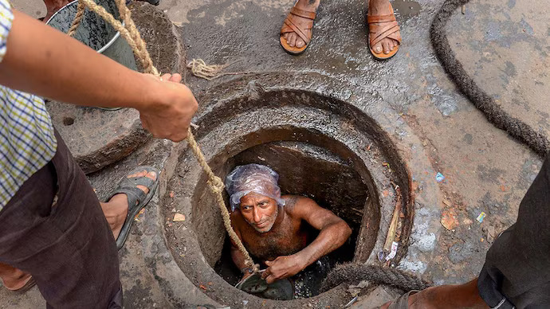
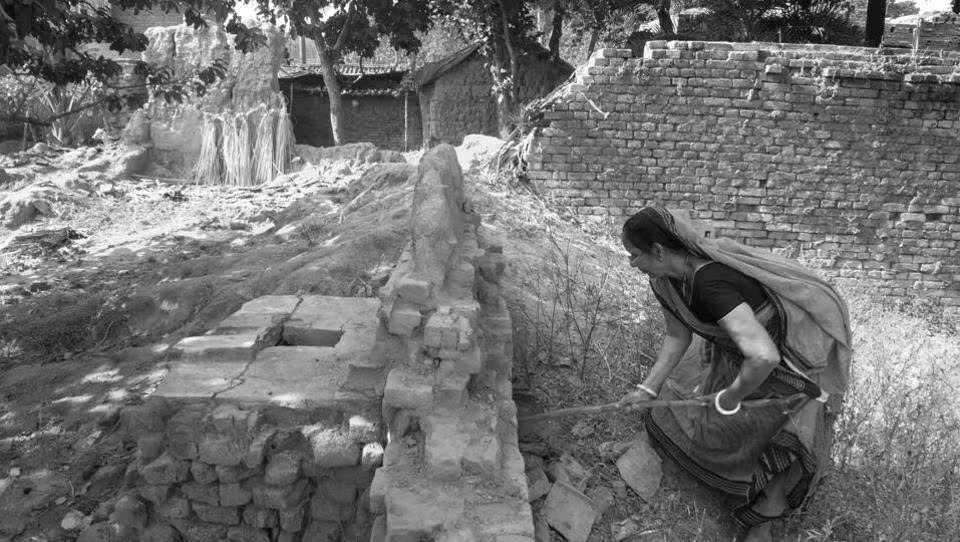

A note on method. Everything on this page comes from published reporting, court records or an official award citation. Names are used only where news reports named the dead. Where a family asked not to be identified, they are not. Spellings of names differ between outlets and are noted. This page does not claim to be a complete roll: it is a small number of people standing in for a much larger one.
The first three exhibits were about systems: caste, statute, plumbing. Systems have a way of making the person disappear into a column. This exhibit puts people back, with two rules: say only what the record supports, and let the numbers and the faces sit side by side.
Names, as reported
These are deaths in the years the Supreme Court was already issuing orders against them.
Farzan (Farzem) SheikhKolkata Leather Complex, Bantala · 2 February 2025
Hasi (Hashi) SheikhKolkata Leather Complex, Bantala · 2 February 2025
Suman SardarKolkata Leather Complex, Bantala · 2 February 2025
Sources for these entries are in notes 1–5. Three further workers died at Vasai-Virar in 2019; the reporting available to this exhibit does not name them.5
Two patterns sit behind the list. The first is the chain of rescue. At Bantala, police said one labourer tripped and fell into the drain and two others who tried to save him fell in after him; the bodies were recovered after a search that took hours.1,2 At New Friends Colony the man who died was found with his younger brother, who survived in critical condition.4 At Anand Vihar in Delhi, a Tribune report described a father and his two sons collapsing in a sewer at a shopping mall, and a fireman who went in after them also collapsing.6 People who work together are very often people who are related, and a single failure of safeguards takes them together.
The second is recruitment. The Bantala workers came originally from Murshidabad district.3 Police said the contractor who engaged them, since arrested, had persuaded them to come to Kolkata with a promise of construction work.7 The reports do not state the men's caste, and this exhibit does not guess it. What the case does show is that the pipeline into the sewer can run through migration and misdescribed jobs as well as through inherited occupation. The deaths came five days after the Supreme Court ordered manual sewer cleaning stopped in six cities, Kolkata among them.3
What the work does to a body
The sudden deaths are the visible part. A review of the medical literature, published in the Indian Journal of Occupational and Environmental Medicine, lists exposure to methane and hydrogen sulphide, cardiovascular degeneration, osteoarthritic changes and disc herniation, infections including hepatitis and leptospirosis, skin problems, and respiratory disease with altered lung function.8 A 2017 Hindustan Times report found skin disease, poor eyesight and breathing trouble to be the most common complaints among sewer workers it spoke to, and quoted an environmental health specialist naming methane, carbon monoxide, ammonia and hydrogen sulphide as the gases most often present.9

Sewer-cleaning work in India. Illustrative photograph;
not a depiction of the named incidents documented above.
Photographer and source: India Today.
A 2006 study of sewage workers in Delhi, Health and Safety Status of Sewage Workers in Delhi, was dedicated to three Delhi Jal Board workers who died while it was being carried out. It noted that no occupational health and safety policy had been developed for these workers and that many die before retirement.10 More recent municipal data reported by Scroll put the number of Delhi sanitation workers who died before retirement at more than 2,400.11 Neither figure measures sewer workers alone, and neither is a clean mortality rate; both are best read as signals that the harm is not only in the dramatic cases.
THE HARM THAT IS NOT COUNTED
The 498 official deaths are acute: someone is pulled out and does not breathe. The slower damage has no line in a parliamentary reply. A family where the father dies of a breathing illness at fifty has no entry in the "sewer deaths" table, and no compensation claim, because nothing about the death is classified as manual scavenging, hazardous cleaning or even work. That is Exhibit 02's definition problem showing up in a lung.
The first workers were women
The public image of this work is now a man at a manhole. That is the newer layer. The older one, covered in Exhibit 01, is the dry latrine, and the person who emptied it was overwhelmingly a woman. The Magsaysay Foundation's citation for Bezwada Wilson in 2016 described a hereditary occupation involving about 180,000 Dalit households cleaning some 790,000 dry latrines, with 98 per cent of scavengers being women and girls, poorly paid, carrying baskets to disposal sites.12 Human Rights Watch documented the same gender pattern, together with the caste coercion that kept it in place.13

Women’s labour in sanitation work.
Credit: Hindusthan Times
OBJECT 01 — PRIMARY TEXT (AWARD CITATION AND ACCEPTANCE SPEECH)
Bezwada Wilson, Ramon Magsaysay Award, 2016
Ramon Magsaysay Award Foundation, citation and response of the awardee. Linked, not reproduced.
Wilson was born into a Dalit family in the Kolar Gold Fields township in Karnataka. His family had done manual scavenging for generations; he was spared it by being the first among them to pursue higher education, and was treated as an outcast at school. In 1986 he complained to the authorities about dry latrines in his town and, when ignored, wrote to the Prime Minister; the town's dry latrines were converted. In 1993 he helped launch the Safai Karamchari Andolan by initiating a public interest petition in the Supreme Court naming states, Union territories and central departments as violators of the 1993 Act.12
In his acceptance speech, he dedicated the award to the women who burned their baskets in rejection of the work, and to those who died cleaning sewer lines. In the citation he is also on record saying the issue is not a sectarian one, because "no human being should be subjected to this inhuman practice."12
This is an institutional document that contains a first-person voice. It shows two things the statistics cannot: that the exit from the work was organised by people inside the community, and that it began with an act as small and as physical as burning a basket. It also connects Exhibit 01 and Exhibit 02, since the 1993 Act that the petition invoked is the one this exhibit's legal layer shows to have been aimed at employers. The women who stopped did so before the 2013 law gave them a statutory right to.
WATCH / LISTEN
Bezwada Wilson — Manual Scavenging: A Hurdle.
TEDxAFMC, 2017.
Watch on YouTube ↗
Stigma travels in two directions
In one of the Hindustan Times reports, a man whose brother was among ten Delhi sewer workers who died in a little over a month said his own children learned that he and his brothers worked in sewers only after the death. People from the Valmiki community, another interviewee said, are stereotyped as sanitation workers.9 Concealment from one's own children and prejudice from the street are two halves of the same arrangement.
The pattern reaches back to the childhood Exhibit 01 documented. Wilson's school years as an outcast, Valmiki's memoir of a Chuhra childhood, and the child in Kakkoos who gave the film its name all describe stigma that is applied before the age at which a person could have chosen the work. The Human layer therefore adds a fact the Legal layer cannot: that the injury begins long before the first descent, and is felt by the people who never go in.
After a death
The record from Vasai-Virar is unusually detailed because the municipal corporation answered an RTI request with the names of the dead and a claim that they were "informal workers". The four young men who died on 17 April 2020, at the height of the Covid lockdown, had taken the work because there was little other. Jayendra Mukane, 20, had been earning ₹17,000 a month as a cleaner in the Indian Railways before losing the job; his mother, Surekha Mukane, said he took the work to make a little money. Meera Bhoye said she had assumed her son Nayan, 24, was going out to play cricket. The widow of Tejas Bhate, 29, supports two young children on ₹3,000 a month as a domestic worker. Nilesh Mukane's parents, who asked not to be named, said the bodies were piled into a tempo and that at the hospital the dead were tossed aside "like dogs".5
Nearly three years on, according to the same report, the couple who owned the tank had been ordered to pay ₹10 lakh to each family and had paid ₹4 lakh, and the municipal corporation had paid nothing. In Delhi, a Newslaundry report found that two months after two men died cleaning a sewer in Bakkarwala in 2022, compensation was held up while the Delhi Jal Board, the Delhi Development Authority and the Delhi government disputed in court who would pay; the Delhi High Court had taken suo motu notice.14 In Bantala, the West Bengal government announced ₹10 lakh each for the next of kin within a day.15 Those three outcomes are different, and the difference is usually who is watching.
How many people is this?
Every count below is about a different group, which is the point. The state's identified manual scavengers, the rural scavengers counted in the 2011 caste census, the sewer and septic-tank workers profiled under the NAMASTE scheme, and the estimate used by the movement that won the Magsaysay Award all describe overlapping but different populations.
Identified in 2013 and 2018 surveys58,098
Sewer and septic workers profiled, NAMASTE90,942
Rural manual scavengers, SECC 20111,82,505
Estimate of scavengers, Magsaysay citation (2016)6,00,000
Sources: ministry replies reported by Scroll, NAMASTE progress statement, PIB on SECC 2011, and the Ramon Magsaysay Award Foundation.12,16 The groups are not the same and the bars are not a series.
A reader should treat the 58,098 as the number of people the state found, not as the number of people there were. The Magsaysay citation's 6,00,000 is an advocacy estimate from 2016 and is itself uncertain. What the spread tells us is that the state's definition, and its method of finding people, determined who entered the record. That is not a flaw in the number. It is the number.
WHAT THIS LAYER ESTABLISHES
Three things. First, that the casualty is larger than the count: acute deaths are tallied, while chronic illness, shortened lives and the damage to families are not. Second, that the work has two faces — the woman with a basket and the man at a manhole — which share a caste history even where they no longer share a method. Third, that what happens after a death depends heavily on whether an authority is made to look. The next exhibit turns to the one thing that is supposed to change the answer: technology.
"Labourer deaths: Bengal govt announces compensation of Rs 10 lakh each for next of kin," PTI / Deccan Herald, 3 February 2025. deccanherald.com
"Kolkata: 3 labourers die after falling inside drain at leather complex," Outlook India, 2 February 2025. outlookindia.com
"Three Workers Die While Cleaning Sewage at Leather Complex Near Kolkata," The Wire, 2 February 2025. thewire.in
"Sewer tragedy: Workers were not wearing protective gear, say cops," The Tribune, March 2025. tribuneindia.com
Aarefa Johari, "What it takes for a city to end manual scavenging," Scroll.in, 6 February 2023. Photographs in the original are by Ayush Prasad and are not reproduced here. scroll.in
"Two brothers die while cleaning sewer," The Tribune, Delhi, 12 August (archive; confirm the year against the article). tribuneindia.com
R. Rajnarayan, "Occupational health hazards in sewage and sanitary workers," Indian Journal of Occupational and Environmental Medicine, as summarised by India Water Portal. indiawaterportal.org
"Raising a Stink," Hindustan Times, 17 September 2017. pressreader.com
Centre for Education and Communication (CEC), Health and Safety Status of Sewage Workers in Delhi, 2006. cec-india.org
Scroll.in report on the Moti Nagar sewage-tank deaths, citing municipal data on sanitation workers who died before retirement. scroll.in(confirm the article's date and wording before submitting)
Ramon Magsaysay Award Foundation, "Wilson, Bezwada," 2016 citation and response. rmaward.asia
Human Rights Watch, Cleaning Human Waste: "Manual Scavenging," Caste, and Discrimination in India, 2014. hrw.org
"No compensation two months after sewer deaths in Delhi," Newslaundry, 21 November 2022. newslaundry.com
See note 1 (PTI / Deccan Herald).
"Manual scavenging has been eliminated, claims Centre," Scroll.in. scroll.in · SECC 2011, pib.gov.in · NAMASTE progress statement, newsonair.gov.in